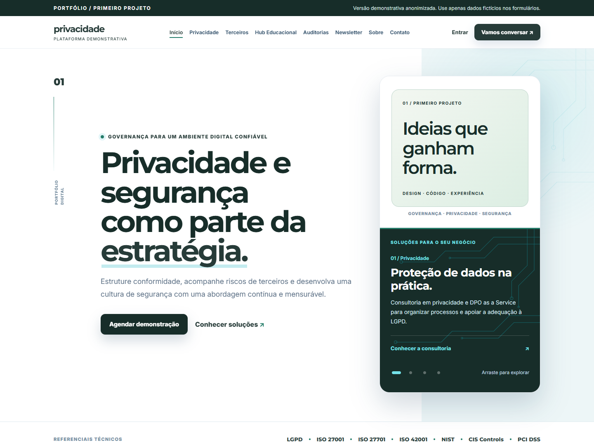

Projeto 01Entrega para cliente
Plataforma de Privacidade
Meu primeiro projeto profissional: uma plataforma institucional com avaliação de terceiros, relatórios, áreas autenticadas e administração — publicada em uma versão segura para portfólio.
- Minha atuação
- Desenvolvimento da interface, autenticação, controle de acesso, relatórios e adaptação à hospedagem do cliente.
- Tecnologias
- Next.js 16, React 19, Node.js, SQLite, SMTP, MFA e Playwright.
- Evidência
- 51 testes de backend e 12 de navegador registrados no projeto. Versão pública anonimizada.